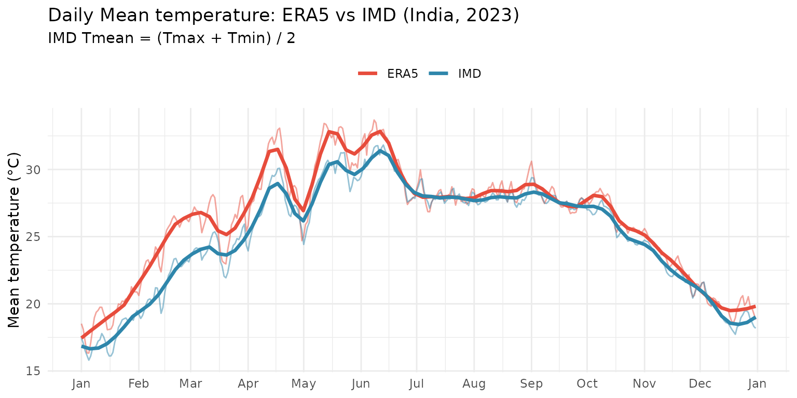
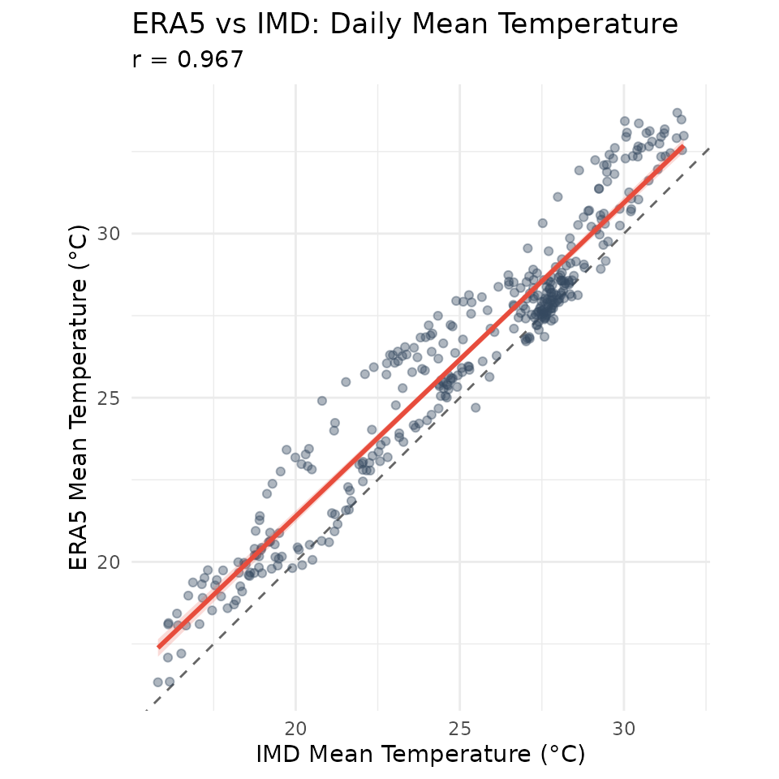
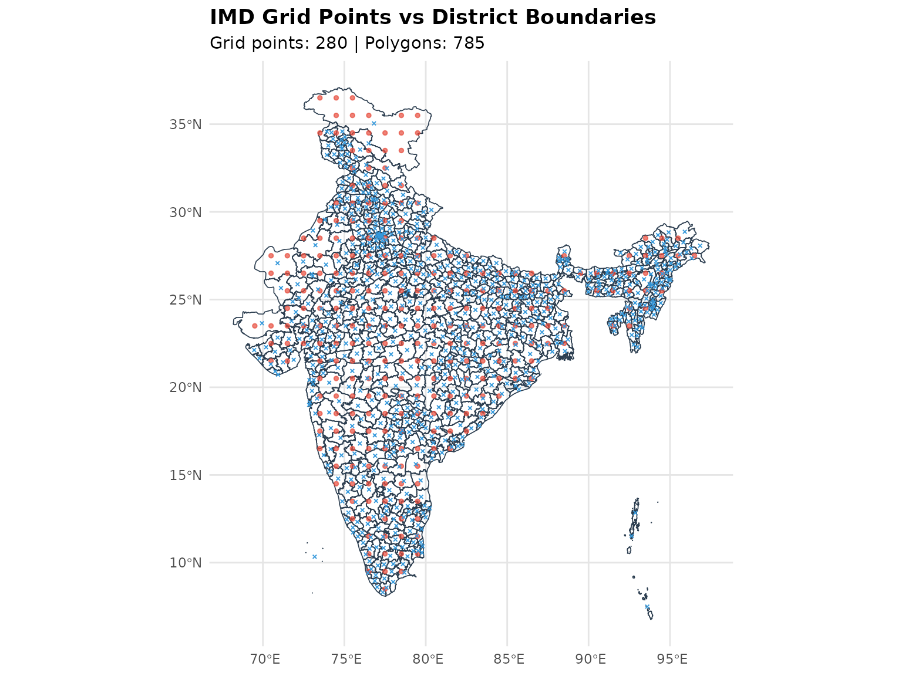
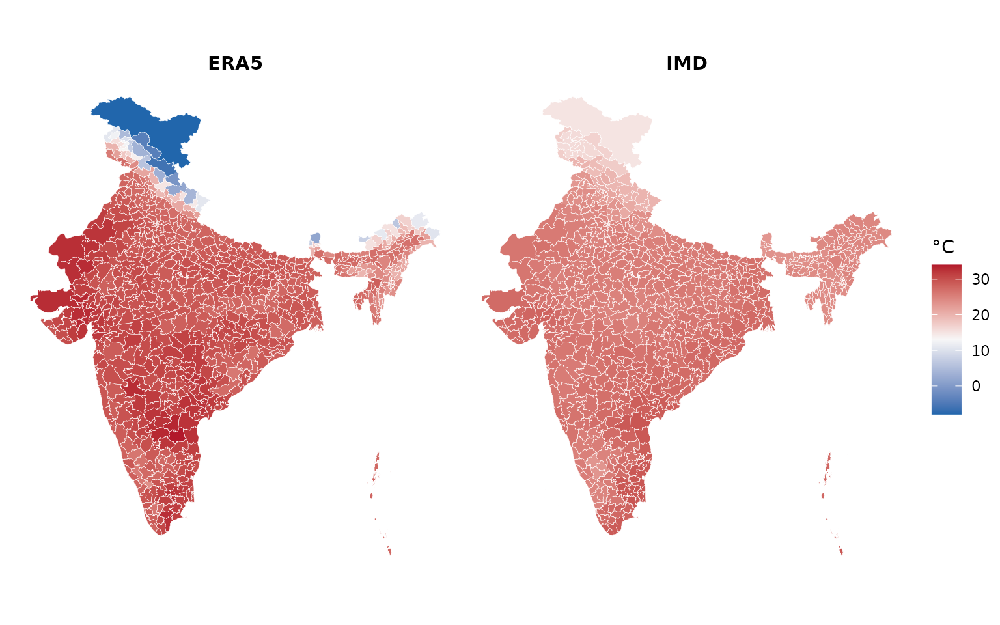

ERA5 vs IMD: Temperature comparison (2023)
Source:vignettes/era5-vs-imd-comparison.Rmd
era5-vs-imd-comparison.Rmd
districts_url <- "https://gist.githubusercontent.com/saketkc/c2041f73fc08d39bb7b7cc39ce7b22e1/raw/2947556a7183455651d411489538452e13addb06/India_LGD_districts.geojson"
districts_file <- "indian_districts.geojson"
if (!file.exists(districts_file)) {
download.file(districts_url, districts_file, mode = "wb", timeout = 300)
}
districts_sf <- sf::st_read(districts_file, quiet = TRUE)Download Data
era5_temp <- era5ify_geojson(
request_id = "era5_temp_2023",
variables = "2m_temperature",
start_date = "2023-01-01",
end_date = "2023-12-31",
json_file = districts_file,
frequency = "daily",
resolution = 0.25
) %>%
mutate(date = as.Date(datetime))
#> | | | 0%
#> | | | 0% | |= | 2% | |=== | 4% | |==== | 6% | |====== | 8% | |======= | 10% | |========= | 12% | |=========== | 16% | |================ | 22% | |================= | 24% | |================== | 26% | |==================== | 28% | |===================== | 30% | |======================== | 34% | |========================== | 36% | |=========================== | 38% | |============================== | 43% | |=============================== | 45% | |===================================== | 53% | |====================================== | 55% | |======================================== | 57% | |========================================= | 59% | |=========================================== | 61% | |================================================ | 69% | |=================================================== | 73% | |========================================================= | 81% | |============================================================ | 85% | |============================================================== | 89% | |=================================================================== | 95% | |======================================================================| 100%
#> | |====== | 8%
#> | | | 0% | |=== | 4% | |==== | 6% | |======== | 12% | |============= | 18% | |=============== | 22% | |================= | 24% | |======================= | 32% | |========================= | 36% | |=========================== | 38% | |============================ | 40% | |=================================== | 50% | |====================================== | 55% | |========================================= | 59% | |============================================ | 63% | |=============================================== | 67% | |==================================================== | 75% | |====================================================== | 77% | |======================================================= | 79% | |=========================================================== | 85% | |================================================================ | 91% | |======================================================================| 100%
#> | |============ | 17%
#> | | | 0% | |=== | 4% | |==== | 6% | |========= | 12% | |========== | 14% | |=========== | 16% | |============= | 18% | |================= | 24% | |=================== | 26% | |==================== | 29% | |======================= | 33% | |======================== | 35% | |============================= | 41% | |============================== | 43% | |=============================== | 45% | |================================= | 47% | |=========================================== | 61% | |============================================== | 65% | |=============================================== | 67% | |================================================= | 69% | |================================================== | 71% | |================================================================ | 92% | |================================================================== | 94% | |=================================================================== | 96% | |======================================================================| 100%
#> | |================== | 25%
#> | | | 0% | |= | 2% | |=== | 4% | |==== | 6% | |======= | 10% | |========= | 12% | |============= | 18% | |================ | 22% | |================= | 24% | |==================== | 29% | |======================= | 33% | |=========================== | 39% | |============================= | 41% | |=============================== | 45% | |================================= | 47% | |================================== | 49% | |==================================== | 51% | |===================================== | 53% | |======================================= | 55% | |========================================= | 59% | |=========================================== | 61% | |=============================================== | 67% | |======================================================================| 100%
#> | |======================= | 33%
#> | | | 0% | |=== | 4% | |====== | 8% | |======= | 10% | |=========== | 16% | |================= | 24% | |=========================== | 38% | |===================================== | 53% | |=================================================== | 73% | |========================================================== | 83% | |============================================================= | 87% | |=================================================================== | 95% | |===================================================================== | 99% | |======================================================================| 100%
#> | |============================= | 42%
#> | | | 0% | |=== | 4% | |==== | 6% | |====== | 8% | |======= | 10% | |======== | 12% | |========== | 14% | |================ | 22% | |================= | 24% | |================== | 26% | |==================== | 28% | |===================== | 30% | |======================= | 32% | |======================== | 34% | |========================= | 36% | |=========================== | 38% | |============================== | 43% | |================================= | 47% | |=================================== | 51% | |===================================== | 53% | |====================================== | 55% | |============================================ | 63% | |=============================================== | 67% | |================================================ | 69% | |================================================== | 71% | |=================================================== | 73% | |====================================================== | 77% | |========================================================== | 83% | |============================================================= | 87% | |============================================================== | 89% | |================================================================= | 93% | |======================================================================| 100%
#> | |=================================== | 50%
#> | | | 0% | |=== | 4% | |==== | 6% | |======= | 10% | |========== | 14% | |=========== | 16% | |============= | 18% | |================ | 23% | |=================== | 27% | |==================== | 29% | |=========================== | 39% | |================================== | 49% | |===================================== | 53% | |======================================== | 57% | |===================================================== | 76% | |====================================================== | 78% | |=========================================================== | 84% | |============================================================ | 86% | |================================================================== | 94% | |=================================================================== | 96% | |======================================================================| 100%
#> | |========================================= | 58%
#> | | | 0% | |=== | 4% | |====== | 8% | |======= | 10% | |================ | 23% | |================= | 25% | |=================== | 27% | |================================= | 47% | |=================================== | 49% | |==================================== | 51% | |===================================== | 54% | |======================================== | 58% | |========================================== | 60% | |==================================================== | 74% | |======================================================== | 80% | |===================================================================== | 99% | |======================================================================| 100%
#> | |=============================================== | 67%
#> | | | 0% | |= | 2% | |=== | 4% | |==== | 6% | |====== | 8% | |======= | 10% | |========= | 12% | |========== | 14% | |============= | 19% | |================= | 25% | |=================== | 27% | |====================== | 31% | |======================= | 33% | |=========================== | 39% | |================================ | 45% | |==================================== | 51% | |===================================== | 53% | |======================================= | 56% | |======================================== | 58% | |========================================== | 60% | |=========================================== | 62% | |================================================== | 72% | |======================================================= | 78% | |========================================================== | 82% | |============================================================== | 88% | |======================================================================| 100%
#> | |==================================================== | 75%
#> | | | 0% | |= | 2% | |=== | 4% | |==== | 6% | |======= | 10% | |========= | 12% | |========== | 14% | |=========== | 16% | |============= | 18% | |============== | 20% | |================ | 22% | |================= | 24% | |================== | 26% | |==================== | 28% | |===================== | 30% | |======================= | 32% | |========================== | 37% | |=========================== | 39% | |===================================== | 53% | |======================================== | 57% | |========================================= | 59% | |============================================ | 63% | |============================================= | 65% | |=================================================== | 73% | |========================================================= | 81% | |========================================================== | 83% | |============================================================ | 85% | |======================================================================| 100%
#> | |========================================================== | 83%
#> | | | 0% | |=== | 4% | |====== | 8% | |======= | 10% | |======== | 12% | |========== | 14% | |=========== | 16% | |============= | 18% | |================= | 24% | |==================== | 28% | |===================== | 30% | |========================= | 36% | |================================== | 48% | |===================================== | 52% | |====================================== | 54% | |======================================= | 56% | |========================================= | 58% | |========================================== | 60% | |============================================ | 62% | |====================================================== | 77% | |============================================================= | 87% | |================================================================= | 93% | |===================================================================== | 99% | |======================================================================| 100%
#> | |================================================================ | 92%
#> | | | 0% | |==== | 5% | |===== | 8% | |========= | 13% | |=========== | 15% | |==================== | 28% | |====================== | 31% | |========================= | 36% | |=========================== | 39% | |============================= | 41% | |=============================== | 44% | |================================ | 46% | |================================== | 49% | |==================================== | 52% | |====================================== | 54% | |======================================== | 57% | |========================================= | 59% | |=========================================== | 62% | |============================================= | 64% | |=============================================== | 67% | |================================================== | 72% | |========================================================== | 82% | |============================================================= | 88% | |================================================================= | 93% | |=================================================================== | 95% | |==================================================================== | 98% | |======================================================================| 100%
#> | |======================================================================| 100%
imd_tmax <- imd_temperature_geojson(
request_id = "imd_tmax_2023",
start_year = 2023, end_year = 2023,
geojson_file = districts_file,
var_type = "tmax"
) %>% mutate(date = as.Date(date), var = "Tmax")
imd_tmin <- imd_temperature_geojson(
request_id = "imd_tmin_2023",
start_year = 2023, end_year = 2023,
geojson_file = districts_file,
var_type = "tmin"
) %>% mutate(date = as.Date(date), var = "Tmin")Temperature comparison
# ERA5 daily mean temperature (spatial mean per day)
era5_daily <- era5_temp %>%
group_by(date) %>%
summarise(temp = mean(value, na.rm = TRUE), .groups = "drop") %>%
mutate(source = "ERA5")
# IMD: Calculate Tmean from (Tmax + Tmin) / 2
imd_tmax_daily <- imd_tmax %>%
group_by(date) %>%
summarise(tmax = mean(temperature, na.rm = TRUE), .groups = "drop")
imd_tmin_daily <- imd_tmin %>%
group_by(date) %>%
summarise(tmin = mean(temperature, na.rm = TRUE), .groups = "drop")
imd_daily <- inner_join(imd_tmax_daily, imd_tmin_daily, by = "date") %>%
mutate(temp = (tmax + tmin) / 2, source = "IMD") %>%
select(date, temp, source)
temp_all <- bind_rows(era5_daily, imd_daily)
ggplot(temp_all, aes(x = date, y = temp, color = source)) +
geom_line(alpha = 0.5) +
geom_smooth(method = "loess", span = 0.1, se = FALSE, linewidth = 1.2) +
scale_x_date(date_breaks = "1 month", date_labels = "%b") +
scale_color_manual(values = c("ERA5" = "#E74C3C", "IMD" = "#2E86AB")) +
labs(
x = NULL, y = "Mean temperature (°C)", color = NULL,
title = "Daily Mean temperature: ERA5 vs IMD (India, 2023)",
subtitle = "IMD Tmean = (Tmax + Tmin) / 2"
) +
theme_minimal() +
theme(legend.position = "top")
temp_wide <- inner_join(
era5_daily %>% select(date, ERA5 = temp),
imd_daily %>% select(date, IMD = temp),
by = "date"
)
# Calculate correlation
cor_val <- cor(temp_wide$ERA5, temp_wide$IMD, use = "complete.obs")
ggplot(temp_wide, aes(x = IMD, y = ERA5)) +
geom_abline(slope = 1, intercept = 0, linetype = "dashed", color = "grey40") +
geom_point(alpha = 0.4, size = 1.5, color = "#34495E") +
geom_smooth(method = "lm", se = TRUE, color = "#E74C3C", fill = "#E74C3C", alpha = 0.2) +
coord_fixed() +
labs(
x = "IMD Mean Temperature (°C)", y = "ERA5 Mean Temperature (°C)",
title = "ERA5 vs IMD: Daily Mean Temperature",
subtitle = sprintf("r = %.3f", cor_val)
) +
theme_minimal()
Grid Coverage Check
imd_grid <- imd_tmax %>% distinct(longitude, latitude)
coverage <- check_grid_coverage(imd_grid, districts_sf, c("state_name", "district_name"))
cat(coverage$summary, "\n")
#> 249/785 polygons (31.7%) contain at least one grid point
visualize_grid_overlap(
imd_grid, districts_sf,
show_centroids = TRUE,
title = "IMD Grid Points vs District Boundaries"
)
ERA5 vs IMD
# ERA5 mean temp by district (using nearest centroid for better coverage)
era5_spatial <- era5_temp %>%
group_by(longitude, latitude) %>%
summarise(temp = mean(value, na.rm = TRUE), .groups = "drop")
era5_districts <- aggregate_to_polygons(
era5_spatial, districts_sf, "temp",
method = "nearest_centroid",
polygon_id_cols = c("state_name", "district_name")
)
# IMD mean temp by district: (Tmax + Tmin) / 2
imd_tmax_spatial <- imd_tmax %>%
group_by(longitude, latitude) %>%
summarise(tmax = mean(temperature, na.rm = TRUE), .groups = "drop")
imd_tmin_spatial <- imd_tmin %>%
group_by(longitude, latitude) %>%
summarise(tmin = mean(temperature, na.rm = TRUE), .groups = "drop")
imd_mean_spatial <- inner_join(imd_tmax_spatial, imd_tmin_spatial, by = c("longitude", "latitude")) %>%
mutate(temp = (tmax + tmin) / 2)
imd_districts <- aggregate_to_polygons(
imd_mean_spatial, districts_sf, "temp",
method = "nearest_centroid",
polygon_id_cols = c("state_name", "district_name")
)
make_temp_map <- function(districts_sf, data, title, limits) {
map_sf <- districts_sf %>% left_join(data, by = c("state_name", "district_name"))
ggplot(map_sf) +
geom_sf(aes(fill = value), color = "white", linewidth = 0.1) +
scale_fill_gradient2(
low = "#2166AC", mid = "#F7F7F7", high = "#B2182B",
midpoint = mean(limits),
limits = limits, name = "°C", na.value = "grey80"
) +
labs(title = title) +
theme_void() +
theme(plot.title = element_text(hjust = 0.5, face = "bold", size = 11))
}
temp_limits <- range(c(era5_districts$value, imd_districts$value), na.rm = TRUE)
p1 <- make_temp_map(districts_sf, era5_districts, "ERA5", temp_limits)
p2 <- make_temp_map(districts_sf, imd_districts, "IMD", temp_limits)
p1 + p2 + plot_layout(ncol = 2, guides = "collect") &
theme(legend.position = "right")
Using BharatViz
BharatViz provides publication-ready choropleth maps of India.
# Prepare district-level data for BharatViz API
era5_api_data <- era5_districts %>%
filter(!is.na(value)) %>%
transmute(state = state_name, district = district_name, value = round(value, 1))
imd_api_data <- imd_districts %>%
filter(!is.na(value)) %>%
transmute(state = state_name, district = district_name, value = round(value, 1))
# Requires BharatViz and the png package
library(R6)
library(gridExtra)
source("https://raw.githubusercontent.com/saketlab/bharatviz/refs/heads/main/server/examples/bharatviz.R")
bv <- BharatViz$new()
era5_result <- bv$generate_districts_map(
era5_api_data,
map_type = "LGD",
title = "ERA5 Mean Temp (2023)",
legend_title = "°C"
)
imd_result <- bv$generate_districts_map(
imd_api_data,
map_type = "LGD",
title = "IMD Mean Temp (2023)",
legend_title = "°C"
)
era5_grob <- bv$get_grob(era5_result)
imd_grob <- bv$get_grob(imd_result)
grid.arrange(era5_grob, imd_grob, ncol = 2)